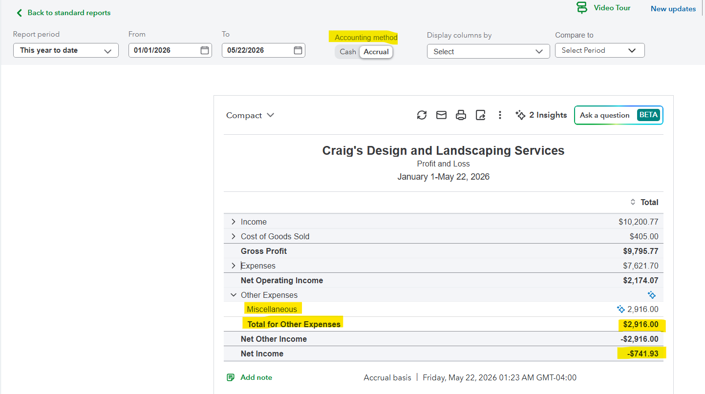
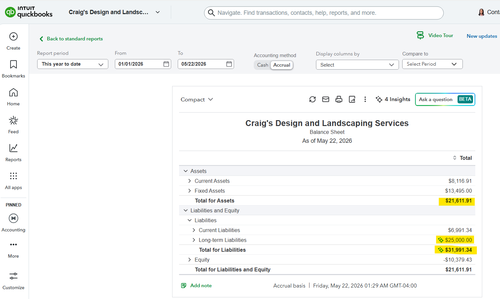
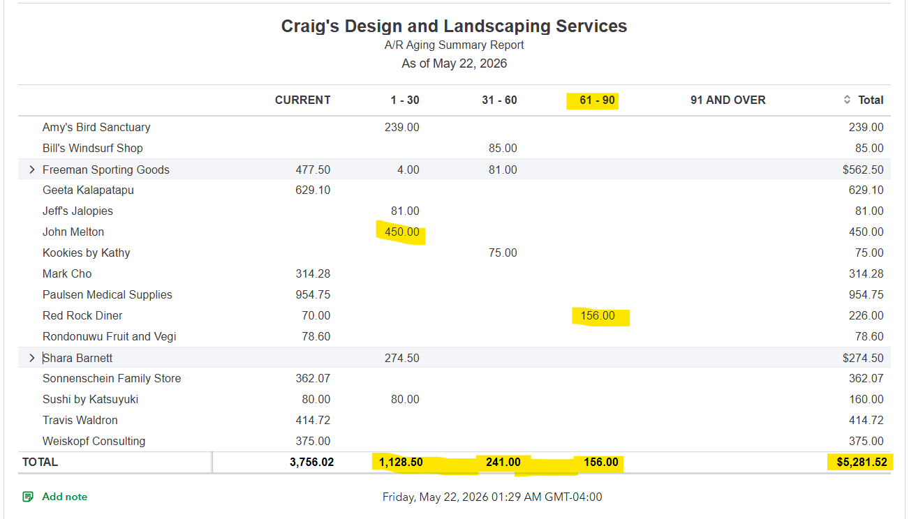
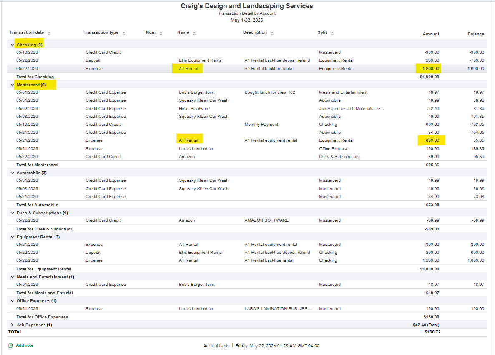
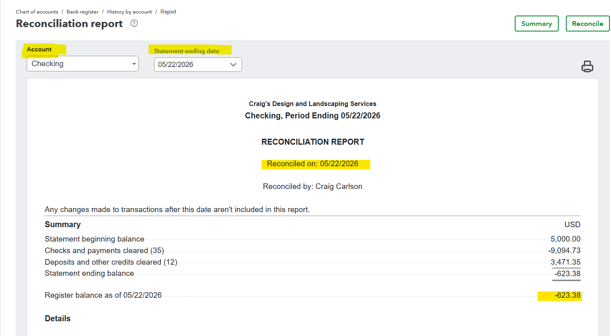

Report Checklist
- Profit and Loss
- Balance Sheet
- Accounts Receivable Aging
- Accounts Payable Aging
- Transaction Detail Report
- Bank Reconciliation Summary
Profit and Loss
Purpose: Shows income, cost of goods sold, expenses, and net income for the selected period.

Analysis
The Profit and Loss report shows income of $10,200.77, cost of goods sold of $405.00, gross profit of $9,795.77, expenses of $7,621.70, net operating income of $2,174.07, other expenses of $2,916.00, and net income of -$741.93. The Miscellaneous amount of $2,916.00 should be reviewed because it creates a final loss.
Result
The owner can understand why the business shows a loss and review expense categories that may need cleanup.
Balance Sheet
Purpose: Shows what the company owns, owes, and the equity position at a specific date.

Analysis
The Balance Sheet shows total assets of $21,611.91, current liabilities of $6,991.34, long-term liabilities of $25,000.00, total liabilities of $31,991.34, and equity of -$10,379.43. Total liabilities and equity equal $21,611.91, which confirms the balance sheet is balanced.
Result
The owner can see the company’s financial position and understand the relationship between assets, liabilities, and equity.
Accounts Receivable Aging
Purpose: Shows customers who owe money and how long invoices have been unpaid.

Analysis
The A/R Aging report shows total customer balances of $5,281.52, including $3,756.02 current, $1,128.50 in 1–30 days, $241.00 in 31–60 days, and $156.00 in 61–90 days. These numbers show which customers need follow-up first.
Result
The business can prioritize collections and improve cash flow by focusing on older unpaid invoices.
Accounts Payable Aging
Purpose: Shows vendor bills the company owes and how long they have been unpaid.

Analysis
The A/P Aging report shows total vendor balances of $1,602.67, including $755.00 current, $761.23 in 1–30 days, and $86.44 in 31–60 days. These numbers help identify bills that need payment planning.
Result
The business can schedule vendor payments, avoid late fees, and protect vendor relationships.
Transaction Detail Report
Purpose: Shows detailed activity behind the accounting records.

Analysis
The Transaction Detail report shows activity by account, including Checking, Mastercard, Automobile, Dues & Subscriptions, Equipment Rental, Meals and Entertainment, Office Expenses, and Job Expenses. Highlighted examples include A1 Rental transactions for -$1,200.00 and $800.00, and Equipment Rental totaling $1,800.00.
Result
The bookkeeper can trace report totals back to individual transactions and verify account coding.
Bank Reconciliation Summary
Purpose: Shows proof that bank or credit card activity was reconciled.

Analysis
The reconciliation summary confirms the Checking account was reconciled on 05/22/2026 with a statement ending balance of -$623.38 and a register balance of -$623.38. The reconciliation screen also shows a $0.00 difference, meaning the account matched the statement.
Result
The owner or accountant can rely on the bank balance because the account was checked against the statement.